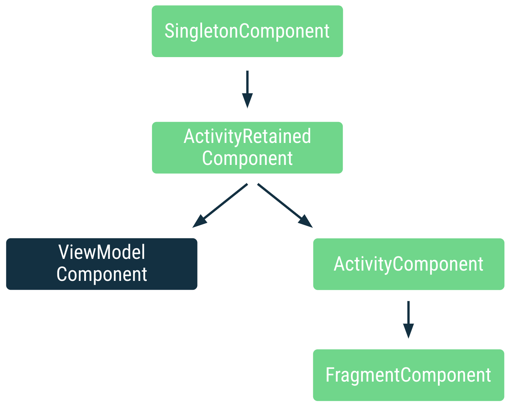

Using Hilt's ViewModelComponent
ViewModelComponent is a component in the Hilt’s component hierarchy that follows the lifecycle of a ViewModel and allows scoping types to it.
Before the ViewModelComponent was added to Hilt, ViewModel classes were created and injected by the ActivityRetainedComponent. Therefore, dependencies of ViewModels could only use unscoped types or types scoped to either the SingletonComponent or ActivityRetainedComponent whose instance is shared by all ViewModels.
The above might not seem like a problem if each screen of your app is an Activity, as scoping a type to ActivityRetainedComponent would mean each ViewModel class would receive a different instance of that type. However, having an activity per screen is not the case for most apps.
Furthermore, the SavedStateHandle type was not available as a default binding in ActivityRetainedComponent.
Now, ViewModels are created and injected by the ViewModelComponent that follows the lifecycle of a ViewModel. Each ViewModel instance has a different instance of ViewModelComponent, and to scope a type to it, use the @ViewModelScoped annotation.
 Position of the ViewModelComponent in a simplified Hilt's component hierarchy
The ViewModelComponent extends from ActivityRetainedComponent. Therefore, types scoped to ViewModelComponent can depend on types scoped to the ActivityRetainedComponent and SingletonComponent. In addition to this, the ViewModelComponent contains a default binding of the SavedStateHandle associated with its ViewModel.
Scoping to the ViewModelComponent
Scoping to the ViewModelComponent, and therefore to a ViewModel, using @ViewModelScoped gives you more flexibility and granularity than what’s possible with other components. ViewModels survive configuration changes and its lifecycle can be controlled by an activity, fragment, or even a navigation graph!
Still, scoping to ActivityComponent and FragmentComponent is useful since these components don’t survive configuration changes which might be necessary in some scenarios. Also, the FragmentComponent extends the ActivityComponent, behavior that you cannot have with multiple ViewModelComponents.
Therefore:
- To make all ViewModels share the same instance of a type, annotate it with
@ActivityRetainedScoped. - To scope a type to a ViewModel, make it survive configuration changes, and/or be controlled by a navigation graph, annotate it with
@ViewModelScoped. - To scope a type to the Activity and don’t make it survive configuration changes, annotate with
@ActivityScoped, or@FragmentScopedif you want that behavior but scoping to a fragment.
Using @ViewModelScoped
This annotation allows you to scope a type to an instance of a ViewModel. The same instance will be injected in all the dependencies that the ViewModel and its dependencies have.
In the following example, LoginViewModel and RegistrationViewModel make use of a @ViewModelScoped UserInputAuthData type that contains mutable state.
@ViewModelScoped // Scopes type to the ViewModel
class UserInputAuthData(
private val handle: SavedStateHandle // Default binding in ViewModelComponent
) { /* Cached data and logic here */ }
class RegistrationViewModel(
private val userInputAuthData: UserInputAuthData,
private val validateUsernameUseCase: ValidateUsernameUseCase,
private val validatePasswordUseCase: ValidatePasswordUseCase
) : ViewModel() { /* ... */ }
class LoginViewModel(
private val userInputAuthData: UserInputAuthData,
private val validateUsernameUseCase: ValidateUsernameUseCase,
private val validatePasswordUseCase: ValidatePasswordUseCase
) : ViewModel() { /* ... */ }
class ValidateUsernameUseCase(
private val userInputAuthData: UserInputAuthData,
private val repository: UserRepository
) { /* ... */ }
class ValidatePasswordUseCase(
private val userInputAuthData: UserInputAuthData,
private val repository: UserRepository
) { /* ... */ }
Since UserInputAuthData is scoped to the ViewModel, RegistrationViewModel and LoginViewModel will receive a different instance of UserInputAuthData. However, the unscoped UseCase dependencies of each ViewModel use the same instance that its ViewModel uses.
Adding bindings to the ViewModelComponent
You can add bindings to the ViewModelComponent as with any other component. If in the code snippet above, ValidateUsernameUseCase was an interface, you could tell Hilt the implementation to use as follows:
@Module
@InstallIn(ViewModelComponent::class)
object UserAuthModule {
@Provides
fun provideValidateUsernameUseCase(
userInputAuthData: UserInputAuthData, // scoped to ViewModelComponent
repository: UserRepository
): ValidateUsernameUseCase {
return ValidateUsernameUseCaseImpl(userInputAuthData, repository)
}
}
ViewModelComponent follows the lifecycle of a ViewModel and allows scoping types to it. As ViewModel’s lifecycle can be controlled by an activity, fragment, or even a navigation graph, you get more flexibility and granularity in the number of places where you can scope.
To scope a type to a ViewModel, annotate it with @ViewModelScoped. To make all ViewModels share the same instance of a type, annotate it with @ActivityRetainedScoped.